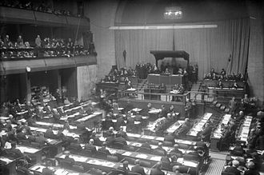

ზოგადად, ითვლება, რომ ევროპაში მეორე მსოფლიო ომი დაიწყო 1939 წლის 1 სექტემბერს, პოლონეთში გერმანიის შეჭრით. აღმოსავლეთში ომის დაწყების თარიღებად შეიძლება ჩაითვალოს ჩინეთ-იაპონიის მეორე ომის დაწყება 1937 წლის 7 ივლისს ან იაპონიის შეჭრა მანჯურიაში, 1931 წლის 19 სექტემბერს. ზოგი ემხრობა ბრიტანელი ისტორიკოს ა. ჯ. პ. ტაეილორს, რომელიც თვლის, რომ მეორე მსოფლიო ომად ევროპისა და აზიის კონფლიქტები 1941 წელს გადაიქცა, ომში აშშ-სა და სსრკ-ს ჩართვის შემდეგ. ომის დაწყების სხვა თარიღად შეიძლება ჩაითვალოს იტალიის შეჭრა აბისინიაში 1935 წლის 3 ოქტომბერს. ბრიტანელი ისტორიკოსი ენტონი ბივორი თვლის, რომ მეორე მსოფლიო ომი დაიწყო ხალხინის გოლის ბრძოლით 1939 წლის მაისიდან სექტემბრამდე. სხვები ესპანეთის სამოქალაქო ომს მიიჩნევენ მეორე მსოფლიო ომის საწყისად ან პრელუდიად. ომის დაწყების თარიღის მსგავსად არ არის საერთოდ შეთანხმებული და ფართოდ აღიარებული ომის დასრულების თარიღიც, რომლადაც ითვლება ან 1945 წლის 14 აგვისტოს ცეცხლის შეწყვეტა (იაპონიაში გამარჯვების დღე), ან 1945 წლის 2 სექტემბერს იაპონიის კაპიტულაცია, რომელმაც დაასრულა ომი აზიაში. მოკავშირეებსა და იაპონიას შორის ზავი 1951 წელს დაიდო. 1990 წელს გერმანიის გაერთიანებამ დაასრულა მეორე მსოფლიო ომის შემდეგ წარმოქმნილი უდიდესი პრობლემა. იაპონიასა და სსრკ-ს შორის სამშვიდობო ხელშეკრულება არასდროს დადებულა, თუმცა ქვეყნებს შორის ომი ოფიციალურად დასრულდა 1956 წლის დეკლარაციით, რომლითაც აღდგა ქვეყნებს შორის დიპლომატიური ურთიერთობები.
პირველი მსოფლიო ომის შემდეგ ევროპის პოლიტიკური რუკა რადიკალურად შეიცვალა, დამარცხებული ცენტრალური ძალების ნანგრევებზე წარმოიქმნა ახალი სახელმწიფოები, როგორებიცაა იუგოსლავია, პოლონეთის მეორე რეჩპოსპოლიტა, ჩეხოსლოვაკია და სხვები, დაიშალა ევროპის ოთხი კონტინენტური იმპერია (გერმანიის იმპერია, ოსმალეთის იმპერია, ავსტრია-უნგრეთის იმპერია და რუსეთის იმპერია), რუსეთში ძალაუფლება ხელში ჩაიგდეს ბოლშევიკებმა ვლადიმერ ლენინის, ლევ ტროცკისა და იოსებ სტალინის მეთაურობით, რომლებმაც 1922 წელს სსრკ შექმნეს. გამარჯვებულმა ანტანტის ქვეყნებმა მიიღეს ახალი ტერიტორიები.
 მომავალში მსოფლიო ომის თავიდან ასარიდებლად 1919 წლის პარიზის სამშვიდობო კონფერენციაზე შექმნეს ერთა ლიგა. ორგანიზაციის უმთავრესი მიზნები იყო შეიარაღებული კონფლიქტის თავიდან არიდება კოლექტიური უსაფრთხოების მეშვეობის, სამხედრო და საზღვაო განიარაღებისა და საერთაშორისო უთანხმოებების მშვიდობიანი მოლაპარაკებებისა და არბიტრაჟის მეშვეობით მოგვარება.[15] 1922 წლის თებერვალში ხელი მოეწერა ხუთი ძალის ხელშეკრულებას ვაშინგტონის საზღვაო კონფერენციაზე, ხელშეკრულებამ ქვეყნების მიხედვით შეზღუდა საბრძოლო ხომალდების დაშვებული ზომა. 1930 წელს დაიდო ლონდონის საზღვაო ხელშეკრულება, რომელმაც შეზღუდა საზღვაო შეიარაღების წარმოება. ორივე ხელშეკრულება დაირღვა მეორე მსოფლიო ომის დაწყებამდე.
ძლიერი პაციფისტური სენტიმენტის მიუხედავად,[16] ირიდენტული და რევანშისტული ნაციონალიზმი აღზევდა ევროპულ სახელმწიფოებში. ეს შეხედულებები გერმანიაში განსაკუთრებით გამყარდა გერმანიის მკაცრად დასჯის გამო ვერსალის ხელშეკრულებაში. ხელშეკრულებით გერმანიამ დაკარგა კონტინენტური ტერიტორიების 13% და ყველა ტერიტორია ზღვის გადაღმა, გერმანიას მიეცა რეპარაციების გადახდის ვალდებულება, გაუქმდა გერმანული სამხედრო-საჰაერო ძალები და მნიშვნელოვნად შეიზღუდა სახმელეთო ჯარები.[17]
გერმანიის იმპერია დაიშალა,
1918–1919 წლების გერმანიის რევოლუციით და ჩანაცვლდა დემოკრატიული მთვარობით, შემდეგ ცნობილი, როგორც ვაიმარის რესპუბლიკა. ომთაშუა პერიოდში დიდი დაპირისპირება იყო რესპუბლიკის მომხრეებს, მემარცხენეებსა და მემარჯვენეებს შორის. იტალიამ, როგორც ანტანტის წევრმა, მიიღო ახალი ტერიტორიები, თუმცა იტალიელი ნაციონალისტები განრისხდნენ, რადგან მათ საფრანგეთი და დიდი ბრიტანეთი გაცილებით მეტს დაჰპირდნენ ომში ჩართვის სანაცვლოდ და ეს დაპირებები არ შეასრულეს ომის დასრულების შემდეგ. 1922 წლიდან 1925 წლამდე ფაშისტური მოძრაობა ბენიტო მუსოლინის ხელმძღვანელობით იკრებდა ძალაუფლებას ნაციონალისტური, ტოტალიტარული და კლასების კოლაბორაციული იდეებით, რომელმაც ჩაანაცვლა წარმომადგენლობითი დემოკრატია და დაიწყო აგრესიული ექსპანსიური საგარეო პოლიტიკა. მუსოლინი იტალიის ახალ მსოფლიო ძალად ქცევას აპირებდა და ხალხს „ახალი რომის იმპერიის“ შექმნას დაჰპირდა.[18]
ადოლფ ჰიტლერი, 1923 წელს გადატრიალებისა და მთავრობის დამხობის წარუმატებელი მცდელობის შემდეგ, გახდა გერმანიის კანცლერი 1933 წელს, როდესაც პრეზიდენტმა პაულ ფონ ჰინდენბურგმა და რაიხსტაგმა დანიშნეს ის. მან საკუთარი რადიკალური, რასობრივად მოტივირებული რევიზიონიზმის იდეისა და ახალი მსოფლიო წესრიგის დამყარების მიზნით გააუქმა რესპუბლიკისა და დემოკრატიის ინსტიტუტები და დაიწყო ქვეყნის რემილიტარიზაციის კამპანია.[19] ამ დროს საფრანგეთმა, მოკავშირის შესანარჩუნებლად, იტალიას გზა უხსნა აბისინიის დასაპყრობად, რომლის დამორჩილებაც იტალიას დიდი ხანი სურდა. სიტუაცია გამწვავდა 1935 წლის დასაწყისში როდესაც საარის ერთა ლიგის ტერიტორია დაუბუნდა გერმანიას სამართლებრივად და ჰიტლერმა დაარღვია ვერსალის ხელშეკრულება შეიარაღების პროგრამის დაჩქარებით, შემოიღო ჯარში გაწვევები.[20] გაერთიანებულმა სამეფომ, საფრანგეთმა და იტალიამ შექმნეს სტრესას ფრონტი 1935 წლის აპრილში გერმანიის შესაკავებლად, რაც აუცილებელი იყო სამხედრო გლობალიზაციისთვის, თუმცა იმავე ივნისს გაერთიანებულმა სამეფომ გერმანიასთან დამოუკიდებლად დადო ანგლო-გერმანული საზღვაო შეთანხმება, რამაც შეამსუბუქა არსებული შეზღუდვები გერმანიის კრიგსმარინეზე. სსრკ-მ, გერმანიის გეგმების საპასუხოდ აღმოსავლეთ ევროპაში, ურთიერთმხარდაჭერის ხელშეკრულება გაამზადა საფრანგეთთან, თუმცა ფრანკო-საბჭოთა პაქტს ერთა ლიგის ბიუროკრატია უნდა გევლო, რამაც გამოუსადეგარი გახადა ის.[21] აშშ-მ კონგრესში ნეიტრალიტეტის აქტი გაატარა იმავე წლის აგვისტოში.[22] ნაცისტურმა გერმანიამ დაარღვია ვერსალისა და ლოკარნოს ხელშეკრულებები რაინლანდის რემილიტარიზაციით 1936 წლის მარტში, მას მცირე წინააღმდეგობა შეხვდა დაშოშმინების პოლიტიკის დამსახურებით.[23] 1936 წლის ოქტომბერში გერმანიამ და იტალიამ ჩამოაყალიბეს რომი-ბერლინის ღერძი. ერთი თვის შემდეგ გერმანიამ და იაპონიამ ხელი მოაწერეს კომინტერნის საწინააღმდეგო პაქტს, იტალია პაქტს შეუერთდა მომავალ წელს.[24] აზია კუომინტანგის (KMT) პარტიამ ჩინეთში წამოიწყო ქვეყნის გაერთიანების კამპანია ჩრდილოეთში ექსპედიციით ადგილობრივი მთავარსარდლების წინააღმდეგ და ნაწილობრივ გააერთიანა ჩინეთი 1920-იან წლებში, თუმცა მალევე დაიწყო სამოქალაქო ომი ჩინეთის კომუნისტური პარტიისა (CCP), რომელთანაც მანამდე თანამშრომლობდნენ,[25] და ახალი ადგილობრივი მთავარსარდლების წინააღმდეგ. 1931 წელს მზარდად მილიტარისტულმა იაპონიის იმპერიამ, რომელსაც დიდი ხანი სურდა ჩინეთში გავლენის გაძლიერება,[26] მოაწყო მუკდენის ინციდენტი და გამოიყენა ის, როგორც საბაბი მანჯურიაში შეჭრისა და მანჯუკოს მარიონეტი სახელმწიფოს დაარსებისათვის.[27] ჩინეთმა მიმართა ერთა ლიგას იაპონიის შეჭრის შესაჩერებლად. იაპონიამ ერთა ლიგა დატოვა საერთაშორისო დაგმობის შემდეგ. ბრძოლები გაიმართა შანგჰაიში, რეჰესა და ჰებეიში. ტანგუს ზავი დაიდო 1933 წელს. ჩინელმა პარტიზანებმა და მოხალისეებმა გააგრძელეს ბრძოლა იაპონური აგრესიის წინააღმდეგ მანჯურიასა და შიდა მონღოლეთში.[28] 1936 წლის ქსი'ანის ინციდენტის შემდეგ კოუმინტანგისა და კომუნისტური ძალები დაზავდნენ, გაერთიანდნენ და შექმნეს გაერთიანებული ფრონტი იაპონიის წინააღმდეგ. 1937 წელს, მარკო პოლოს ხიდის ინციდენტის შემდეგ დაიწყო ჩინეთ-იაპონიის მეორე ომი.[29]
იაპონიის შეჭრა მანჯურიაში იაპონელი სამხედროები მუკდენში იაპონიის იმპერიის კვანტუნის არმიამ მანჯურიაში შეჭრა დაიწყო 1931 წლის 18 სექტემბერს, მუკდენის ინციდნეტის შემდეგ. ომი დასრულდა 1932 წლის თებერვალში და იაპონიამ შექმნა მანჯუკოს მარიონეტული სახელმწიფო. იაპონიის მიერ მანჯურიის ოკუპაცია მეორე მსოფლიო ომის ბოლომდე, 1945 წლის აგვისტოს შუა რიცხვებამდე, გაგრძელდა. სამხრეთ მანკურიის სარკინიგზო ზონა და კორეის ნახევარკუნძული იაპონიის იმპერიის კონტროლის ქვეშ იყო რუსეთ-იაპონიის ომის შემდეგ. იაპონიის მზარდმა ინდუსტრიალიზაციამ და მილიტარიზაციამ სახელმწიფო აშშ-ის ექსპორტზე დამოკიდებული გახადა ნავთობისა და მეტალებისთვის.[30] აშშ-ის სანქციებმა, რომლებმაც შეაფერხეს იაპონიის აშშ-სთან ვაჭრობა, რომელსაც უკვე ოკუპირებული ჰქონდა ფილიპინები, გამოიწვია იაპონიის ექსპანსია ჩინეთსა და ინდოჩინეთში.[31] შეჭრამ დიდი ყურადღება მიიპყრო საერთაშორისო დონეზე, ერთა ლიგამ შექმნა ლიტონის კომისია სიტუაციის განსასჯელად. კომისიამ დაადგინა, რომ მანჯუკო იაპონიის იმპერიის მარიონეტი იყო, ის არ უნდა აღიარებულიყო, როგორც დამოუკიდებელი სახელმწიფო და მანჯურია უნდა დაჰბრუნებოდა სუვერენულ ჩინეთს. კომისიის დასკვნების შედეგად იაპონიამ ერთა ლიგა დატოვა.
იტალია-ეთიოპიის მეორე ომი იყო კოლონიური ომი, რომელიც გაგრძელდა 1935 წლის ოქტომბრიდან 1936 წლის მაისამდე. ომი დაიწყო იტალიის სამეფოს შეიარაღებული ძალების ეთიოპიის იმპერიაში შეჭრით, რომელიც დაიწყო იტალიური სომალილენდისა და ერიტრეიდან.[32] ომის დასრულდა ეთიოპიის სამხედრო ოკუპაციით და მისი იტალიის აღმოსავლეთ აფრიკაში ანექსიით. ამ კონფლიქტში ერთა ლიგამ გამოავლინა სისუსტე და ვერ შეინარჩუნა მშვიდობა.
ორივე, იტალია და ეთიოპია, იყო ერთა ლიგის წევრი, თუმცა ლიგამ ცოტა გააკეთა, როდესაც იტალიამ აშკარად დაარღვია ერთა ლიგის წესდების X მუხლი.[33] გაერთიანებული სამეფო და საფრანგეთი ემხრობოდნენ იტალიაზე სანქციების დაწესებას, თუმცა სანქციები სრულად არ აღსრულდა და იტალია არ შეჩერდა.[34] შემდგომში იტალია დათანხმდა გერმანიის მიერ ავსტრიის ანშლუსს.[35]
გერმანიის თავდასხმა პოლონეთზე (1939) მეორე მსოფლიო ომი ევროპაში გერმანიამ დაიწყო 1939 წლის 1 სექტემბერს 4 საათსა და 45 წუთზე ვერმახტის პოლონეთზე თავდასხმით. თავდასხმის გამართლების მიზნით გერმანულმა მხარემ მოაწყო რამდენიმე ინციდენტი. ყველაზე ცნობილი მათ შორის იყო პოლონურ სამხედრო ფორმებში გამოწყობილი „სს-ის“ წევრების თავდასხმა 31 აგვისტოს რადიოსადგურ გლაივიცზე, რომლის დროსაც მათ პოლონურ ენაზე ეთერში გადასცეს პოლონეთის მიერ გერმანიისადმი ომის გამოცხადების ცნობა. ომის პირველი გასროლა მოახდინა გერმანულმა სასწავლო გემმა „შლეზვიგ-ჰოლშტაინმა“. პოლონური არმია რიცხობრივად თანაბარი იყო ვერმახტის, თუმცა ტექნიკური და საბრძოლო ტაქტიკის მხრივ დიდად ჩამორჩებოდა თავდამსხმელებს. პოლონეთის მთავრობა დიდ იმედებს ამყარებდა საფრანგეთის და დიდი ბრიტანეთის სამხედრო დახმარებაზე, რომელებთანაც მას ე.წ. „გარანტიის პაქტი“ ჰქონდა დადებული 1939 წლის 30 მარტს. ბრიტანეთმა და საფრანგეთმა 3 სექტემბერს ულტიმატუმი წაუყენეს გერმანიას და მოსთხოვეს ჯარების დაუყოვნებლივი გამოყვანა პოლონეთის ტერიტორიიდან. „გარანტიის პაქტის“ მიხედვით ინგლის-საფრანგეთს ულტიმატუმის შეუსრულებლობის პირობებში სამხედრო მოქმედებები უნდა დაეწყოთ არაუგვიანეს 15 დღისა. ჰიტლერი იმედოვნებდა, რომ დასავლეთის სახელმწიფოები ისეთივე ნეიტრალურ პოზიციას დაიკავებდნენ პოლონეთის მიმართ, როგორიც ეკავათ გერმანიის მიერ ჩეხოსლოვაკიის დაპყრობის და ავსტრიის ანშლუსის დროს. გერმანიას თავს არავინ დასხმია, მიუხედავად იმისა რომ პოლონეთის ორივე მოკავშირემ - ინგლისმა და საფრანგეთმა გერმანიას ომი გამოუცხადა. 17 სექტემბერს პოლონეთის იმედებს წერტილი დაესვა. რიბენტროპ-მოლოტოვის პაქტის საიდუმლო დამატებითი პროტოკოლის შესაბამისად წითელმა არმიამ მოახდინა პოლონეთის აღმოსავლეთი ნაწილის ოკუპაცია. მიუხედავად ამ ძალადობრივი ფაქტისა ამჯერად ინგლისს და საფრანგეთს საბჭოთა კავშირისათვის ომი არ გამოუცხადებიათ. იმავე დღეს პოლონეთის მთავრობამ დატოვა ქვეყანა და რუმინეთს შეაფარა თავი. პოლონეთის სამხედრო მარცხი გარდაუვალი იყო. 28 სექტემბერს დაეცა პოლონეთის დედაქალაქი ვარშავა, რომელიც 18 სექტემბრის შემდეგ ვერმახტის ალყაში იყო და განუწყვეტლივ იბომბებოდა. 29 სექტემბერს გერმანელებმა აიღეს მოდინის ციხესიმაგრეც. 8 ოქტომბერს ბრესტ-ლიტოვსკის შეთანხმების თანახმად პოლონეთი სადემარკაციო ხაზის საშუალებით გაიყვეს გერმანიამ და სსრკ-მა. გერმანიამ არა მარტო ვერსალის ზავით დაკარგული ტერიტორიები დაიბრუნა, არამედ მესამე რაიხის შემადგენლობაში შევიდა თითქმის მთელი ცენტრალური პოლონეთი ქ. ლოძთან ერთად. პოლონეთის დანარჩენ ტერიტორიაზე დაარსებულ იქნა გენერალ-გუბერნია. პოლონეთის დაპყრობას საშინელი შედეგი მოჰყვა მშვიდობიანი მოსახლეობისათვის. უფასო მუშახელის იძულებით სამუშაობზე დეპორტირება ყოველდღიურ მოვლენად იქცა. განსაკუთრებით დაზარალდა პოლონეთის ებრაული მოსახლეობა, რომელთა განადგურებაც გერმანული რასიზმის უმაღლეს მიზანს წარმოადგენდა. იდენტურ „გენოციდს“ „კლასობრივი მტრების“ წინააღმდეგ აღმოსავლეთ პოლონეთში აწარმოებდა სსრკ-ც. პოლონეთზე სწრაფი სამხედრო გამარჯვების შემდეგ დამკვიდრდა ტერმინი „ელვისებური ომი“ — იგივე „ბლიცკრიგი“ (გერმ. Blitzkrieg) და იგი გერმანიის სამხედრო ტაკქტიკის განუყოფელ ნაწილად იქცა 1941 წლის მიწურულამდე.
1939 წლის 3 სექტემბერს საფრანგეთმა და დიდმა ბრიტანეთმა ომი გამოუცხადეს გერმანიას. ამ მიზეზით საფრანგეთმა 5 სექტემბერს დაიწყო შეზღუდული, უფრო სწორად სიმბოლური შეტევა ზაარის მხარეზე. გერმანელბმა ყოველგვარი წინააღმდეგობის გარეშე დაიხიეს უკან, გამაგრებული „დასავლეთის კედლის“ (სამხედრო სიმაგრათა ხაზი) უკან. ამის შემდეგ, თუ მხედველობაში არ მივიღებთ ცალკეულ საარტილერიო გასროლებს, საომარი მოქმედებები დასავლეთის ფრონტზე არ ყოფილა. ომის ეს ფაზა ცნობილია „მჯდომარე ომის“ სახელით. გერმანიის მხრიდან ადგილი ჰქონდა პროპაგანდისტულ „თავდასხმებს“ საფრანგეთის არმიაზე. პლაკატებითა და მეგაფონებით „შეიარაღებული“ ვერმახტის კარისკაცები მიმართავდნენ ფრანგებს: „რატომ იბრძვით?“ ან „ჩვენ პირველები არ გავისვრით“ და ა.შ. 27 სექტემბერს ჰიტლერმა უბრძანა სახმელეთო ჯარების უმაღლესი მთავარსარდლობას ("OKH") შეემუშავებინათ თავდასხმითი გეგმა, ე.წ. „ყვითელი შემთხვევა“ (გერმ. „Fall Gelb“). 29 ოქტომბერს გეგმა უკვე მზად იყო. იგი მიზნად ისახავდა 2 არმიით ბელგიისა და ნიდერლანდების გავლით მოკავშირეთა ჯარებზე თავდასხმას და მათ განადგურებას მდ. სომის ჩრდილოეთით. საბოლოო ჯამში თავდასხმას ადგილი 1939 წელს არ ჰქონია. ცუდი ზამთრის პირობებისა და პოლონეთში მოსალოდნელზე მეტი დანაკარგების გამო ჰიტლერმა თავდასხმა ერთიანობაში 29-ჯერ გადადო.
1939 წლის 30 ნოემბერს წითელმა არმიამ მარშალ კირილ მერეცკოვის მეთაურობით გადალახა ფინეთის საზღვარი 950 კმ-ის სიგანეზე. 1500 ტანკითა და 3000 თვითმფრინავით შეარაღებული წითელი არმია სწრაფ გამარჯვებას ელოდა, მაგრამ ფინელებმა შეუპოვარი წინააღმდეგობა გაუწიეს თავდამსხმელებს და დიდი ზიანი მიაყენეს. წითელმა არმიამ 200 000-მდე ჯარისკაცი დაკარგა, მაშინ როცა ფინეთის დანაკარგი 25 000-ს არ აღემატებოდა. ამ ომში ფინეთს ფარულად სამხედრო დახმარებას უწევდა შვედეთი, ისე რომ მის მიერვე გამოცხადებული საერთაშორისო ნეიტრალიტეტი არ დაერღვია. ფინეთს საომარ მხარდაჭერას ჰპირდებოდნენ დიდი ბრიტანეთი და საფრანგეთი, მაგრამ საქმე აქამდე არ მისულა. 1940 წლის 12 მარტს ფინეთსა და საბჭოთა კავშირს შორის ხელი მოეწერა საზავო ხელშეკრულებას, რომლის ძალითაც კარელიის ნაწილი და ნახევარკუნძული კალასტაიანსაარენტო (დღ. პეჩენგა) სსრკ-ს გადაეცა. დაკარგული ტერიტორიების დაბრუნების მიზნით ფინეთმა 1941 წელს, საბჭოთა კავშირზე გერმანიის თავდასხმის შემდეგ, სსრკ-თან საომარი მოქმედებები განაახლა.
დასავლეთ ფრონტი გერმანიის მხრიდან გამაგრებული იყო „ზიგფრიდის“ (გერმ. "Siegfried"), ხოლო საფრანგეთის მხრიდან "მაჟინოს" (ფრანგ. "Maginot") თავდაცვითი ხაზით. მაჟინოს 130 კმ-იანი თავდაცვითი ხაზის ბუნებრივ გაგრძელებას არდენები წარმოადგენდა და რაკი ის სატანკო შენაერთებისთვის ძნელად გადასალახავ ბუნებრივ ბარიერს წარმოადგენდა, ამიტომ საფრანგეთის გენერალიტეტი ამ მხრიდან გერმანიის თავდასხმას არ ელოდა. დასავლეთის ფრონტის საბრძოლო გეგმა ვერმახტში გენერალ-ლეიტანანტ ერიხ ფონ მანშტაინის და მისი ხელქვეითების, პოლკოვნიკ გიუნთერ ბლუმენტრიტის და იმჟამინდელი მაიორის ჰენინგ ფონ ტრესკოს მიერ იქნა შემუშავებული. გეგმა მიზნად ისახავდა არდენების გავლით სწრაფ გარღვევას და ჩრდილოეთით მოტოვებული მოკავშირეთა ძალებისათვის ზურგიდან დარტყმას. სატანკო და მოტორიზირებული დივიზიების დიდი კონცენტრაციით უნდა გაჭრილიყო „ხვრელი არდენებში“ და როგორც შემდგომში ჩერჩილმა თქვა „ნამგალისებური ჩაჭრით“ მოკავშირეთა არმიები ლა მანშამდე ალყაში უნდა მოექციათ. 1940 წლის 10 მაისს გერმანიის სამხედრო შენაერთებმა (სულ 7 არმია) დაიწყეს შეტევები ნეიტრალურ ქვეყნებზე: ბელგიაზე, ნიდერლანდებზე და ლუქსემბურგზე. 136 ვერმახტის დივიზიის წინააღმდეგ იდგა მოკავშირეთა 137 დივიზია. თავდასხმის პირველსავე დღეს ვერმახტის სადესანტო-პარაშუტისტთა ნაწილებმა აიღეს მანამდე აუღებლად მიჩნეული ბელგიური პორტი ებენ-ემელი (ფრან. Eben-Emael). 14 მაისს გენერალ გუდერიანის ტანკებმა გადალახეს მდ. მაასი. ინგლისის „სამეფო სამხედრო-საჰაერო ძალები“ (ინგლ. Royal Air Force) ყოველნაირად ცდილობდა დაენგრია პონტონები მდინარეზე და ხელი შეეშალა ჯარების მაასის გადალახვისთვის, მაგრამ ეს თავდასხმები წარუმატებელი გამოდგა და ბრიტანელებმა თავიანთი თვითმფრინავების დიდი ნაწილი დაკარგეს. 17 მაისს ფრანგებმა როგორც იქნა დაიწყეს შეტევა. შარლ დე გოლის მე-4 სატანკო დივიზიამ შეტევა დაიწყო მონკორნეს მიმართულებით. მიუხედავად თავდაპირველი წარმატებებისა შეტევა შეწყვეტილ იქნა ლუფტვაფეს „შტუკების“ ძლიერი თავდასხმების გამო. იმავე დღეს, 17 მაისს ბრიუსელი უბრძოლველად დანებდა ვერმახტს. ნიდერლანდელები, რომლებიც პირველ მსოფლიო ომშიც ნეიტრალურები იყვნენ, უფრო სუსტად იყვნენ საბრძოლველად მომზადებული, ვიდრე ბელგიელები. უნდა ითქვას რომ ვერმახტმა თითქმის უბრძოლველად დაიპყრო ქვეყანა. 14 მაისს როტერდამის დაბომბვის შემდეგ ნიდერლანდებმა კაპუტულაცია გამოაცხადა. მომდევნო დღეს მთავრობა და დედოფალი ვილჰელმინა ლონდონში წავიდნენ ემიგრაციაში. არტურ ზაის-ინკვარტი დაინიშნა ნიდერლანდების რაიხსკომისარად. 19 მაისს გერმანიის მე-6 არმიამ მიაღწია მდ. შელდეს და აბევილამდე წაიწია წინ. ეს შეტევა იმდენად წრაფად იქნა განხორციელებული, რომ ფრანგული და ბრიტანული სამხედრო ნაწილები დიუნკერკთან ალყაში მოქცეულები აღმოჩნდნენ. 27 მაისს მოკავშირეებმა დაიწყეს ალყაში მოქცეული 7500 ჯარისკაცის ევაკუაცია („ოპერაცია დინამო“). სახმელეთო ჯარების დაჯგუფება "A"-ს სატანკო დივიზიებმა შეტევა ჩვეულებრივ გააგრძელეს, სანამ გენერალ-პოლკოვნიკმა გერდ ფონ რუნდშტეტმა შეჩერების ბრძანება არ გასცა. ჰიტლერის 24 მაისის ბრძანება შეტევის შეჩერების თაობაზე ისტორიული კვლევის დღემდე სადავო საკითხია, ბრძანების გაცემის მიზეზებზე ერთიანი აზრი არ არსებობს. 4 ივნისს ევაკუაცია, რომლეშიც მონაწილეობა 900-მდე სატრანსპორტო გემმა მიიღო მონაწილეობა, დასრულებულ იქნა. მიუხედავად ლუფტვაფეს შეუწყვეტელი ბომბარდირებისა, ევაკუირებულ იქნა დაახ. 337 000 ჯარისკაცი, აქედან 110 000 საფრანგეთის არმიის. დღევანდელი გადასახედიდან ჰიტლერის ბრძანება შეტევის შეჩერების შესახებ მძიმე ტაქტიკური შეცდომა იყო, რადგან ინგლისის არმიამ ბრძოლისუნარიანობა შეინარჩუნა და შემდგომში ვერმახტის ექსპანსიას ბრიტანეთში წინ გადაეღობა. ბრიტანული არმიის ევაკუაციის შემდეგ, საფრანგეთი თავდაცვისთვის ემზადებობდა. ბენელუქსის დაპყრობით ვერმახტმა დაასრულა ოპერაცია „ფალ გელბი“ (ქართ. „ყვითელი შემთხვევა“, გერმ. Fall Gelb)
და დაიწყო ოპერაცია „ფალ როტი“ (ქართ. „წითელი შემთხვევა“, გერმ. Fall Rot). 5 ივნისს გერმანელებმა შეტევა დაიწყეს მდინარეების ესნისა და სომის რეგიონში. 9 ივნისს მე-6 ინფანტერიის დივიზიამ გადალახა მდ. სენა. 11 ივნისს მუსოლინიმ ომი გამოუცხადა მოკავშირეთა ქვეყნებს. 14 ივნისს ვერმახტის მე-18 არმიამ უბრძოლველად აიღო პარიზი. იმავდროულად სახმელეთო არმიათა დაჯგუფება "C"-მ გაარღვია მაჟინოს ხაზი და აიღო ციხესიმაგრე ვერდენი. 17 ივნისს ახლადჩამოყალიბებული მთავრობის მეთაურმა, პრემიერ-მინისტრმა ანრი ფილიპ პეტენმა საფრანგეთის კაპიტულაცია გამოაცხადა, რომელიც ოფიციალურად გაფორმდა 1940 წლის 22 ივნისს კომპიენის ტყეში, ზუსტად იმ ადგილზე, სადაც 1918 წლის 11 ნოემბერს გერმანიამ ხელი მოაწერა პირველ მსოფლიო ომში დამარცხების დოკუმენტს. ჰიტლერმა საამისაოდ მარშალ ფერდინან ფოშის ვაგონიც კი წამოაღებინა პარიზიდან. საომარი ცეცხლის შეწყვეტა ძალაში შევიდა 25 ივნისის 01:35 საათზე. იმისათვის რომ საფრანგეთის ფლოტი გერმანელებს არ ჩავარდნოდათ ხელში, ბრიტანელებმა 3 ივლისს დაბომბეს მერს-ელ-ქებირის პორტი, სადაც ფრანგული გემების ნაწილი იყო სტაციონირებული. ბლიცკრიგი დასავლეთ ფრონტზე 6 კვირა და 3 დღე გაგრძელდა, რომელმაც 135 000 მოკავშირეთა და 46 000 ვერმახტის ჯარისკაცის სიცოცხლე იმსხვერპლა. საფრანგეთი ორ ნაწილად იქნა გაყოფილი. ჩრდილოეთში (გერმანიის სფერო) სტაციონირებულ იქნენ ვერმახტის და ლუფტვაფეს ძალები ბრიტანეთზე ინვაზიის დასაწყებად. ატლანტის ოკეანის პორტებში და განსაკუთრებით ბრესტში შეიქმნა კრიეგსმარინეს წყალქვესა ნავების ბაზები. სამხრეთი და აღმოსავლეთი ნაწილი ფრანგული კონტროლის ქვეშ დარჩა, რომელსაც პეტენის მარიონეტული მთავრობა განაგებდა ქალაქ ვიშიდან.
ინგლისისათვის საჰაერო ომის მიზანი ბრიტანეთში შეჭრისთვის (ოპერაცია „ზეელიოვე“) მზადება იყო, რისთვისაც უპირველეს ყოვლისა ლუფტვაფეს არაბრძოლისუნარიანი უნდა გაეხადა „სამეფო სამხედრო-საჰაერო ძალები“ ("RAF"). მიუხედავად ამისა ჰიტლერი იმედოვნებდა, რომ ინგლისი გერმანიის ასეთი აშკარა მუქარის გამო შეწყვეტდა ბრძოლას და ზავს ითხოვდა და შეჭრა საჭირო აღარ იქნებოდა.
ბოლო 2 წლის განმავლობაში ბრიტანეთი მთელი ძალებით ემზადებოდა საჰაერო ბრძოლისათვის. მარტო ბრძოლის დაწყებიდან პირველ სამ თვეში ინგლისელებმა 1.400 საბრძოლო თვითმფრინავი დაამზადეს. „რაფ-ი“ პილოტების ნაკლებობას განიცდიდა, რაც შევსებულ იქნა ბრიტანეთის თანამეგობრობის, ფრანგი, ამერიკელი, პოლონელი და ჩეხი მოხალისე მფრინავებით.
ბრიტანელი მფრინავების თავგანწირულმა ბრძოლამ და დიდმა მატერიალურმა და ცოცხალმა დანაკარგებმა ორივე მხრიდან აიძულა ლუფტვაფე 1940 წლის ოქტომბრიდან შეემცირებინა ფართომასშტაბიანი ბომბარდირების აქციები და მთავარი აქცენტი ღამეულ თავდასხმებზე გადაეტანა. ლუფტვაფეს ხელმძღვანელობის და განსაკუთრებით ჰერმან გერინგის ფატალური შეცდომა იყო ინგლისელთა რადარების უგულველყოფა და ქალაქების და მშვიდობიანი მოსახლეობის დაბომბვა. მიუხედავად დიდი მსხვერპლისა „რაფ-ი“ ამ თავდასხმებს არ დაუსუსტებია, ხოლო რადარის ტექნოლოგიის მიზანმიმართული გამოყენებით ინგლისელები ეფექტურად ანადგურებდნენ ლეფტვაფეს თვითმფრინავებს.
გიორინგი საჰაერო ომში დამარცხებას პილოტთა სიმხდალეს აბრალებდა, რას სიმართლეს არანაირად არ შეესაბამებოდა და უფრო ის მიზანი ჰქონდა რომ ყურადრება მისი პერსონიდან და საკუთარი შეცდომებიდან სხვა საგანზე გადაეტანა. ლონდონისა და ინგლისის სხვა ქალაქების ბომბარდირებას 32.000 მშვიდობიანი მოსახლე შეეწირა. ქალაქი ქოვენთრი თითქმის მთლიანად მიწასთან იქნა გასწორებული.
იაპონიის თავდასხმის შემდეგ აშშ-ს წყნარი ოკეანის ფლოტზე პერლ-ჰარბორში 1941 წლის 7 დეკემბერს, ამერიკა იძულებული გახდა მეორე დღეს, 8 დეკემბერს, ომი გამოეცხადებინა გერმანიისა და იაპონიისათვის. აშშ-ს და დიდი ბრიტანეთის მთავრობათა მეთაურები შეთანხმდნენ პრიორიტეტი ევროპაზე გადაეტანათ და უპირველეს ყოვლისა დაემარცხებინათ გერმანია („Germany first“). პირველ შეტაკებებს ამერიკისა და გერმანიის ჯარებს შორის ადგილი ჰქონდათ 1941 წლის მიწურულს ჩრ. აფრიკაში.
ბრძოლა ჩრდილოეთ აფრიკაში 1940-1943 მთავარი თემა: „აფრიკის კამპანია“ იტალიელებმა ჩრდილოეთ აფრიკაში, ისევე როგორც ევროპაში, ბრიტანელთა წინააღმდეგ მთელი რიგი დამარცხებებისა იწვნიეს. 1940 წელს ლიბიაში წამოწყებული იტალიელთა შეტევა ტოტალური მარცხით დამთავრდა. გერმანელმა გენერალმა ერვინ რომელმა 1941 წლის თებერვალში მიიღო ბრძანება მოკავშირე იტალიელები დაეცვა. რომლის ხელქვეით მხოლოდ სუსტი შენაერთები იდგნენ. შეაფასა რა შექმნილი სიტუაცია, რომელი მივიდა იმ დასკვნამდე რომ ინგლისელთა შეტევის შემთხვევაში თავისი სუსტი ჯარებით თავდაცვას ვერ შეძლებდა. ამიტომ მან გადაწყვიტა თვითონ შეეტია მოწინააღმდეგისათვის და გამოეყენებინა მოულოდნელობის ეფექტი.
31 მარტს რომელმა შეტევა დაიწყო. მისი შეტევის მთავარი ძალა მიმართული იყო მერსა ბრეგას წინააღმდეგ, რომ შემდეგ კირენაიკასკენ გაჭრილიყო. რომელის ვარაუდი გამართლდა, ოპერაცია წარმატებით განხორციელდა და გერმანელებმა ბენგაზიც კი აიღეს. 10 მარტისათვის „აფრიკის კორპუსი“ აღმოსავლეთ ლიბიურ პორტ-ციხესიმაგრეს ტობრუკს მიადგა, რომელიც მცირე ხნით ადრე იტალიელებმა გაამაგრეს და შემდეგ თითქმის უბრძოლველად დატოვეს. მთელი 1 თვის განმავლობაში რომელის არმია უშედეგო იერიშს იერიშზე აწარმოებდა ტობრუკის წინააღმდეგ. 13 აპრილს რომელმა იერიში შეწყვიტა. ასევე შეწყვეტილ იქნა წინსვლაც, ვინაიდან გერმანული არმიის მომარაგება ზურგიდან შეფერხებებით მიმდინარეობდა. ორივე მებრძოლი მხარე პოზიციურ საომარ სიტუაციაზე გადავიდა.
ნოემბერის დასაწყისში ბრიტანელებმა კონტრშეტევა წამოიწყეს. 26 ნოემბერს ბრიტანელთა მეორე კონტიერიშის შემდეგ ტობრუკის გარნიზონმა მოახერხა ალყის გარღვევა. 7 დეკემბერს „აფრიკის კორპუსმა“ დაიხია გაზალას თავდაცვით ხაზამდე. თუმც ეს უკანადახევა დიდხანს არ გაგრძელებულა. 1942 წლის იანვარში რომელმა კვლავ იერიში მიიტანა ტობრუკზე. 1942 წლის 26 მაისს მან დაიწყო ტობრუკზე შეტევა — კოდური სახელი „ოპერაცია თეზეუსი“. მძიმე სატანკო ბრძოლების შემდეგ გერმანელებმა და მისმა მოკავშირეებმა შეძლეს 10 ივნისს აეღოთ ბირ ჰახეიმი, ხოლო 20 ივნისს აღებულ იქნა ტობრუკი. ამ წარმატებისათვის რომელს გენერალ-ფელდმარშალის სამხედრო წოდება მიენიჭა.
რომელის შემდგომი მიზანი ეგვიპტეზე შეტევა იყო. გერმანელებს უნდა აეღოთ ალექსანდრია და სუეცის არხი. ამ მიზნებს წინ გადაეღობა ბრიტანელთა სარდალი ბერნარდ მონტგომერი. ელ ალამეინის მახლობლად ბრიტანელებმა თავდაცვის 65 კმ-იანი ხაზი ააგეს და გერმანელთა შეტევა შეაჩერეს. 23 ოქტომბერს მონტგომერის კონტშეტევა წამოიწყო. „აფრიკის კორპუსი“ ბრიტებზე რიცხობრივად მცირე იყო და იძულებული გახდა უკან დაეხია. გერმანელთა სიტუაცია სრულიად უიმედო შეიქმნა მას შემდეგ, რაც 8 ნოემბერს ამერიკელები გადმოსხდნენ კასაბლანკაში და ალჟირში („ოპერაცია ტორჩი“) და გერმანელთა ზურგში მეორე ფრონტი გახსნენ. 13 ნოემბერს ქალაქი ტობრუკი ბრიტანელებმა აიღეს.
1943 წელს რომელს უკანდახევის მეტი სხვა გზა არ ჰქონდა. 23 იანვარს ბრიტებმა აიღეს ტრიპოლი. მარტ-აპრილში გერმანიისა და მის მოკავშირეთა ჯარები ალყაში აღმოჩდნენ („ტუნისის კამპანია“). გერმანელთა შეუპოვარი ბრძოლა მხოლოდ მარეთის ხაზზე გრძელდებოდა. 13 მაისს „აფრიკის კორპუსი“ იძულებული გახდა კაპიტულაცია გამოეცხადებინა.
მეორე მსოფლიო ომმა უდიდესი გავლენა იქონია კაცობრიობის ბედზე. გერმანია, იტალია და იაპონია გარკვეული ხნით გამოეთიშნენ მსოფლიოს, როგორც ძლიერი სახელმწიფოები. ევროპაში გადამწყვეტი როლი აშშ-ს და მსოფლიოში ახლად გაბატონებულ სსრკ-ს ჰქონდათ მას შემდეგ, რაც 1940 გერმანიამ საფრანგეთი დაიპყრო, ხოლო დიდი ბრიტანეთი უძლური იყო დაემარცხებინა გერმანია. ომში მონაწილეობდა 72 სახელმწიფო (დედამიწის მოსახლეობის 80 %). ბრძოლები მიმდინარეობდა 40 სახელმწიფოს ტერიტორიაზე. შეიარაღებულ ძალებში მობილიზებულ იქნა 110 მლნ. კაცი. დაიღუპა 62 მლნ. კაცი (სსრკ — 27 მლნ., გერმანია — 5,25 მლნ., პოლონეთი — 4,5-6 მლნ., იუგოსლავია — 1,7 მლნ., იაპონია — 1,8 მლნ., აშშ — 318 000, დიდი ბრიტანეთი — 386 000, საფრანგეთი — 810 000, იტალია — 330 000, რუმინეთი — 378 000, უნგრეთი — 420 000, ფინეთი — 84 000), სამხედრო ხარჯები და ზარალი 4 ტრილიონ დოლარს შეადგენდა.
ომს თან სდევდა საშინელი ნგრევა. განადგურდა ათიათასობით ქალაქი და სოფელი, უბედურება თავს დაატყდა ათეულობით მლნ. ადამიანს. ამ ომში საბოლოოდ განადგურდა ნაციზმი და ფაშიზმი, როგორც საერთაშორისო იმპერიალიზმის დამკვრელი ძალა. ანტიჰიტლერული კოალიციის გადამწყვეტმა გამარჯვებამ ხელი შეუწყო რევოლუციურ გარდაქმნებს მსოფლიოს მრავალ ქვეყანაში. მეორე მსოფლიო ომის შედეგებმა გაადვილა და დააჩქარა მთელ რიგ ქვეყნებში სახალხო-დემოკრატიული და სოციალისტური რევოლუციების გამარჯვება. დამყარდა მსოფლიოში ახალი პოლიტიკური და სამართლებრივი წესრიგი.
მეორე მსოფლიო ომი წარმოადგენს უდიდეს ეტაპს სამხედრო ხელოვნების განვითარების ისტორიაში.